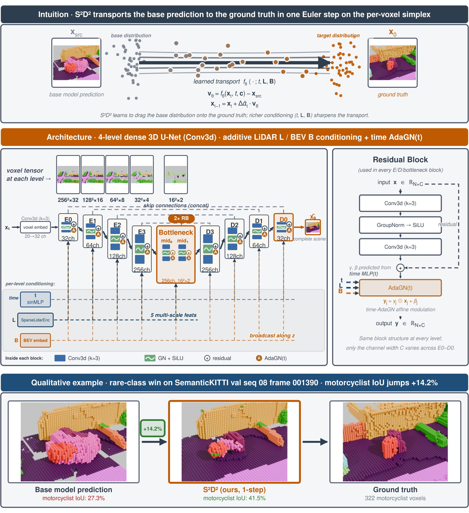
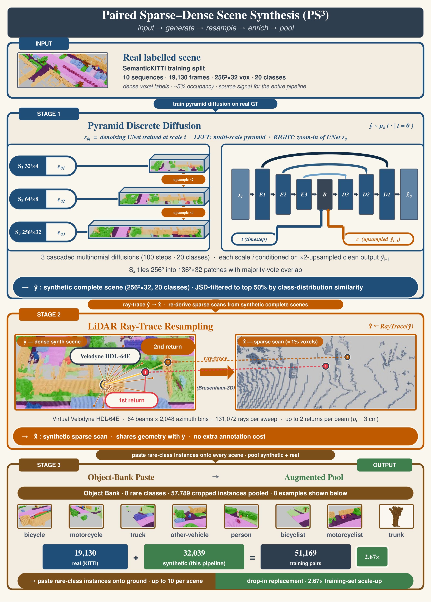
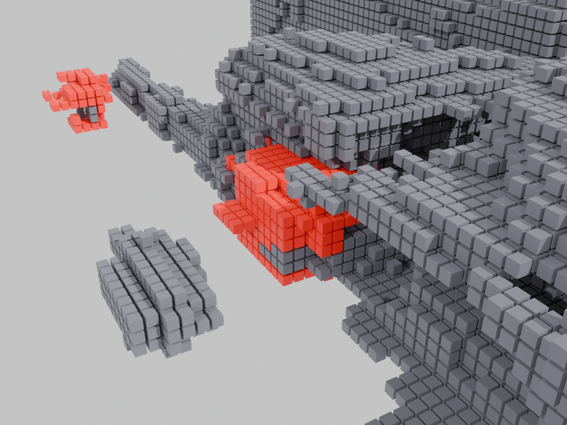
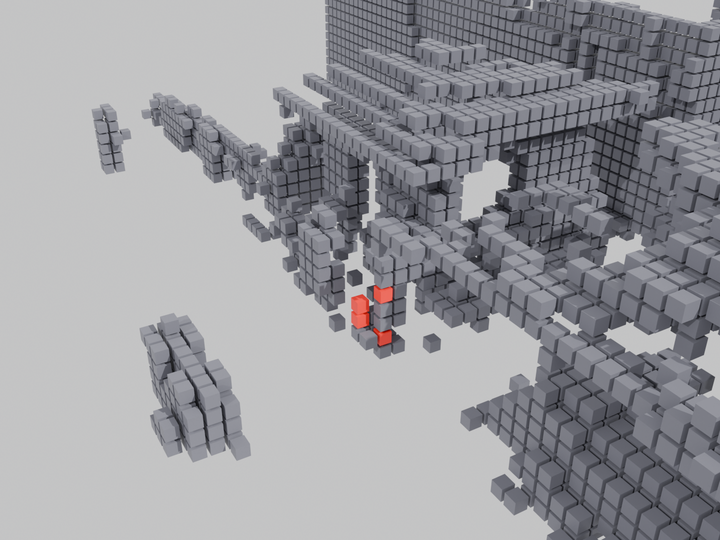
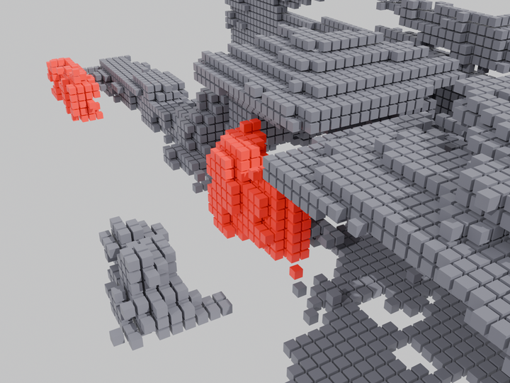

Abstract
Outdoor LiDAR semantic scene completion (SSC) recovers a dense semantic voxel grid from a scan observing 1% of the target volume, under class imbalance beyond 7,000×. We recast SSC as generative semantic scene completion (GSSC): a single discrete-diffusion formulation in three roles. First, paired sparse–dense scene synthesis (PS3) generates matched sparse LiDAR observations with their dense semantic completions, addressing the long tail at its source and yielding the PS3-SemanticKITTI corpus we train on alongside SemanticKITTI. Second, semantic-guided generative scene completion (SGSC) completes the scene from sparse voxels with a multinomial discrete diffusion model conditioned on a bird’s-eye-view semantic map and a sparse 3D feature stream. Third, the same framework refines that output in a single flow-matching step: structured source discrete diffusion (S2D2). SGSC needs no completion base, and refining its own output improves it further. The same refinement improves the mIoU of every SSC base we test. On the strongest it sets, to our knowledge, the best causal, single-sweep, single-sample result on the SemanticKITTI hidden test: 38.8% mIoU at one step without test-time augmentation, +2.1 pp over the previous best published score. Four correction steps with eight-view test-time augmentation reach 39.2%. S2D2 needs neither base retraining nor test-time adaptation.
Every headline number on this page is indexed on one predicate: causal, single-sweep, single-sample — one sweep, no future moments, no ensembling. It excludes multi-sweep entries, test-time adaptation, and our own eight-view ensemble row.
Method
A diffusion model normally starts from noise. S2D2 starts from a frozen base model’s own prediction and learns the correction to ground truth. Because the terminal state of the forward process is that prediction rather than noise, training over all timesteps already predicts the target from a single source input, and one Euler step deploys. Nothing about the base changes: no retraining, no distillation, no access to its weights. SGSC is the same denoiser and forward process run from pure categorical noise instead, so one formulation covers both the base-free and the base-conditioned setting: from noise, with no completion base at all, it reaches 30.5% val mIoU, and refining its own output with the same operator takes it to 32.8%.

Data augmentation
SemanticKITTI’s rarest classes are outnumbered beyond 7,000 to one, so the tail is addressed at its source. Pyramid discrete diffusion synthesises complete labelled scenes; a Jensen–Shannon filter keeps the in-distribution half; a rare-class object bank fills the tail; and an HDL-64E ray-tracer pairs each synthetic scene with the sparse scan a sensor would have returned. The result is the PS3-SemanticKITTI corpus, trained on alongside the real data.

Results
Official evaluator, both splits. Under the predicate — causal, single-sweep, single-sample — one correction step reaches 38.8% mIoU on the hidden test, +2.1 pp over SCPNet’s published 36.7% — measured against a base we did not re-submit, so the comparison is to SCPNet’s published score. Rows outside the predicate are greyed and are not comparable to ours: test-time adaptation, our own eight-view ensemble, the four-sweep entry, and PaSCo, whose panoptic-mode evaluator is not protocol-matched to ours.
On validation the same checkpoint reaches 38.54% against its base’s 36.17%. The nearest comparison is SemCity, which refines the same base with a continuous prior: it reports 38.19% from SCPNet’s released weights, which score 1.4 pp above our port, and it gains far more completion IoU than we do (+9.0 against +2.8). Our lead is 0.35 pp from a weaker anchor, so we read the two as comparable rather than ranked. Run from noise with no completion base at all, the same machinery (SGSC) reaches 30.5%, and 32.8% once its own output is corrected — 3.3 pp short of the discriminative base, which is the honest present position of a pipeline built without one — though not a fully generative one, since its conditioning still reads a frozen segmentation backbone.
| Method | mIoU | Comp | SC-m | VRU | Note |
|---|---|---|---|---|---|
This table is loaded from data/results.json and needs JavaScript. The same table is Table I of the paper. | |||||
S3CNet, not us, takes the vulnerable-road-user column. We do not lead on safety: among single-sweep rows S3CNet leads every VRU class, at VRU-IoU 32.6 against our 21.6.
The frozen SemanticKITTI checkpoint also transfers zero-shot, with no fine-tuning: on SemanticPOSS — a different sensor — mIoU rises 1.0 → 6.5% and completion IoU 31.8 → 54.9%, though that ground truth is reconstructed rather than official, so it is not head-to-head with published numbers; on SSCBench-KITTI360 the gain is in completion IoU, with the mIoU delta small relative to single-seed run-to-run variance.
Per-class gain over the frozen base
Validation sequence 08, one correction step, against the frozen SCPNet base at 36.17% mIoU. Two columns are shown because only one of them reproduces: Released is the shipped checkpoint, Retrain an independent from-scratch run. The bulk delta reproduces; the largest single-class gain does not, and the paper does not claim it. The safety metrics inherit the same discount: VRU-IoU’s +4.9 becomes +2.5 on retrain, and the safety claim should be read against that.
| Class | Base IoU | Released Δ | Retrain Δ |
|---|---|---|---|
This table is loaded from data/perclass.json and needs JavaScript. The same table is Table II of the paper. | |||
Interactive comparison
Real SemanticKITTI voxel grids, rendered as 0.2 m cubes. The base, ours and ground-truth views use the official class palette; the sparse input view is painted a single colour, since the raw scan carries no labels. The camera pose is held across view switches, so the four views are directly comparable. The per-scene IoU figures below are the same chips as the figure above, from the N=4, +D4-TTA configuration rather than the N=1 headline.
Loading scene…
The interactive 3D viewer needs JavaScript. The same comparison is in the qualitative figure above.
: frozen base · ours ·
Limitations

(a) frozen JS3C-Net base

(b) after one correction step

(c) ground truth
The refiner cannot exceed its source: on a weaker base it can erase a rare class rather than recover it, costing two of the three vulnerable-road-user classes on the JS3C-Net base. Its correction pass does not pay for its latency inside a one-second window — the pass costs 107 ms, dropping the deployed base-plus-refiner pipeline to 3.23 FPS end-to-end on an idle H100 against the frozen base’s 4.95. Our evidence for generality is two dense categorical tasks, 3D completion and BEV segmentation. Whether the correction reaches any output that is a per-element categorical simplex is untested rather than shown.
Restricted to frames where the base recovers the class at all, one step lowers person IoU on 74.7% of them and bicyclist IoU on 92.5% for the JS3C-Net base. On the SCPNet base the same two rates are 24.0% and 23.5%, which is why the transfer claim is scoped to voxel-grid-native sources.
BibTeX
@article{chen2026gssc,
title = {Generative Semantic Scene Completion},
author = {Chen, Shi and Ge, WeifengAuthor names withheld},
journal = {Under review, IEEE Transactions on Pattern Analysis and
Machine Intelligence},
year = {2026}
}